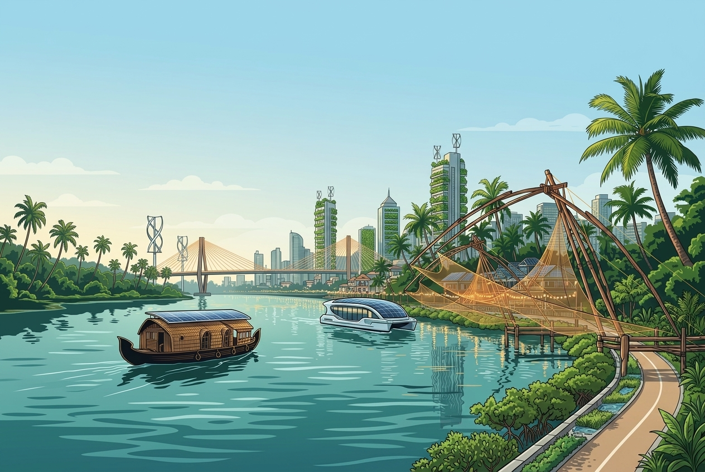

DYUTI 2027
Empowering Communities through Innovation, Inclusion, and Partnership. Curated by the Department of Social Work, Rajagiri College of Social Sciences (Autonomous).
DYUTI 2027

The 2027 DYUTI National Conference, themed “Social Work for Sustainable Development: Empowering Communities through Innovation, Inclusion, and Partnership,” brings together academicians, researchers, practitioners, policymakers, students, and development professionals to deliberate on innovative and collaborative approaches for sustainable development. Aligned with the 2030 Agenda for Sustainable Development and its vision of “Leaving No One Behind,” the conference highlights the vital role of social work in promoting social justice, inclusive development, community empowerment, and sustainable solutions. Through scholarly dialogue and knowledge exchange, DYUTI 2027 aims to strengthen partnerships and advance resilient, equitable, and sustainable communities.
About DYUTI 2027
DYUTI — Developmental Yearnings for a United and Transformed India
DYUTI, meaning “Spark of Life”, is a distinguished annual national academic conference hosted by the Department of Social Work, Rajagiri College of Social Sciences (Autonomous). Initiated in 1998, DYUTI has evolved into a premier national forum for evidence-based practice and social innovation.

Background
Global Commitment & The 2030 Agenda
The adoption of the 2030 Agenda for Sustainable Development by the United Nations marked a global commitment to achieving the 17 Sustainable Development Goals (SDGs) through integrated social, economic, and environmental action. However, recent global reports indicate that progress has slowed due to climate change, widening inequalities, economic uncertainties, conflicts, and public health challenges, emphasizing the need for renewed collaboration and innovative, community-driven solutions.
Inclusive Development Challenges in India
In India, while notable progress has been made towards several SDGs, challenges such as poverty, inequality, unemployment, climate vulnerability, gender disparities, environmental degradation, and unequal access to quality education, healthcare, and social protection continue to hinder inclusive development. Addressing these complex issues requires coordinated efforts among governments, academia, civil society, communities, industry, development professionals and social entrepreneurs.
The Role of Social Work & DYUTI 2027
Social work plays a pivotal role in advancing sustainable development through advocacy, community engagement, policy action, interdisciplinary collaboration, and evidence-based practice. DYUTI 2027 seeks to provide a platform for sharing innovative practices, indigenous knowledge, research, and partnerships that contribute to achieving the Sustainable Development Goals while strengthening resilient, inclusive, and sustainable communities.
Major Sub Themes
Deliberating across 8 pivotal sub-themes on sustainable development. Authors and researchers are invited to submit abstracts aligned with these focus tracks.
Social Work and the Sustainable Development Goals
- Social Work and the 2030 Agenda for Sustainable Development
- Localizing the SDGs through Community Practice
- Human Rights, Social Justice, and Sustainable Development
- Measuring Social Impact and Sustainable Outcomes
Inclusive Communities and Social Equity
- Poverty Reduction and Sustainable Livelihoods
- Gender Equality and Women's Empowerment
- Child Rights and Protection
- Disability Inclusion and Universal Accessibility
- Age-friendly Communities and Healthy Ageing
- Indigenous Communities and Marginalized Populations
- Migration and Social Inclusion
Innovation for Community Development
- Digital Social Work and Artificial Intelligence
- Social Innovation and Community Entrepreneurship
- Technology-enabled Social Services
- Digital Inclusion and Smart Communities
- Innovation in Social Welfare Delivery
- Social Enterprises and Sustainable Livelihoods
Climate Action, Environmental Sustainability and Disaster Resilience
- Climate Change and Community Resilience
- Disaster Risk Reduction and Humanitarian Social Work
- Environmental Justice
- Sustainable Resource Management
- Green Social Work
- Circular Economy and Community Sustainability
Health, Well-being and Sustainable Societies
- Public Health and Community Well-being
- Mental Health Promotion
- Community-Based Rehabilitation
- Healthy Ageing and Geriatric Care
- Nutrition, Food Security, and Social Protection
- One Health and Community Health Approaches
Education, Youth and Future Leadership
- Education for Sustainable Development
- Youth Participation and Civic Engagement
- Life Skills and Employability
- Digital Literacy and Lifelong Learning
- Student Leadership for Sustainable Communities
- Social Work Education for Future Practice
Governance, Policy and Collaborative Partnerships
- Public Policy and Sustainable Governance
- Corporate Social Responsibility and ESG Practices
- Public–Private–Community Partnerships
- Community Participation and Local Self-Governance
- Sustainable Financing for Social Development
- Multi-sectoral Collaboration for Community Transformation
Indigenous Knowledge, Culture and Global Perspectives
- Indian Knowledge Systems and Sustainable Development
- Traditional Ecological Knowledge
- Cultural Sustainability and Heritage Preservation
- Global Best Practices in Community Development
- Cross-cultural Learning and International Collaboration
- Evidence-based Models for Sustainable Social Work Practice